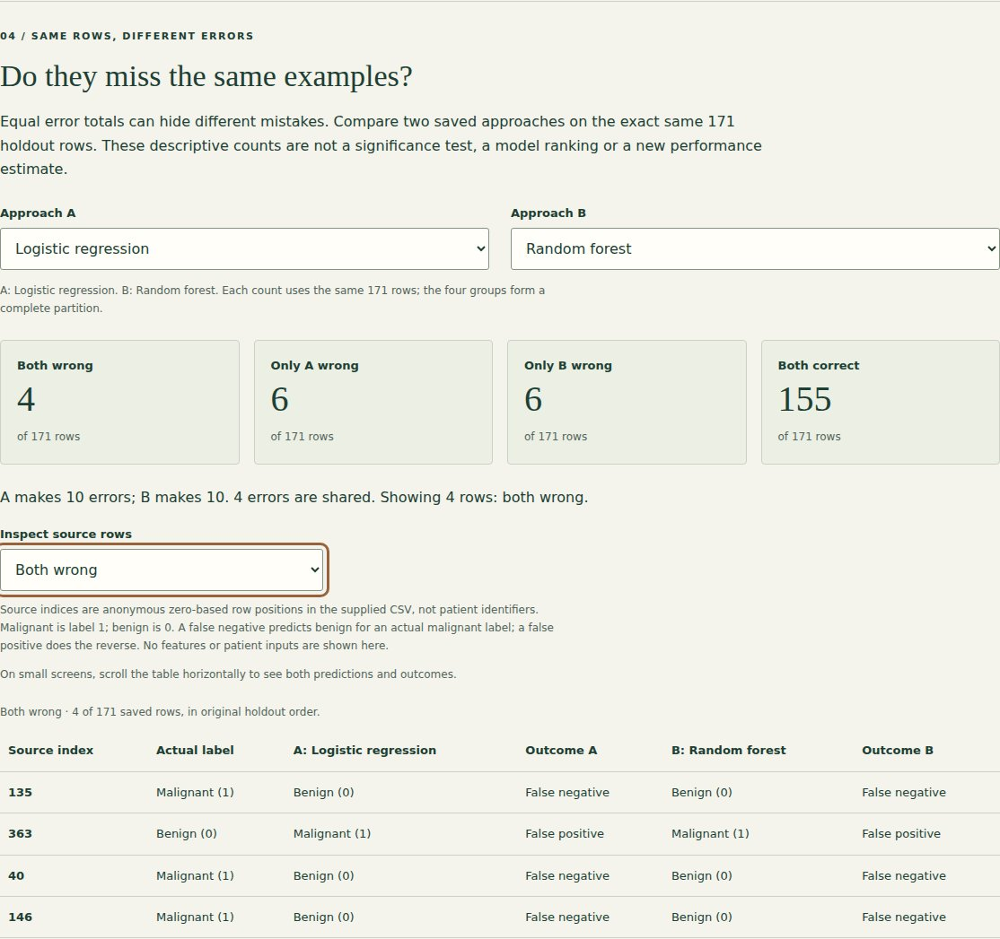
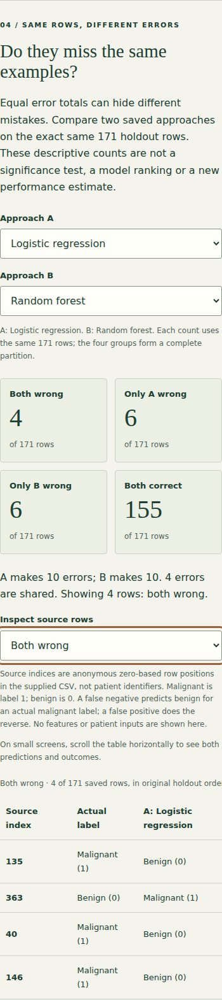

Breast cancer classification.
Compare which saved examples classifiers miss together or separately, with exact row evidence and clear evaluation limits.
Public demo: browser-based static version. See source for architecture and limitations.

What I built
Extended the existing read-only results lab with paired error partitions and anonymous source-row evidence for all three classifiers and the training-majority baseline.
Why it matters
Two approaches can have the same error total while missing different examples. Aggregate scores alone cannot show that overlap; the saved predictions make it inspectable.
How it works
- 01
Reproduce the fixed evaluation and reconcile saved predictions with source labels, exact partitions, confusion counts and scores; training and model settings remain unchanged.
- 02
Choose approaches A and B to partition the same 171 holdout rows into both wrong, only A wrong, only B wrong and both correct.
- 03
Inspect anonymous source positions, actual labels, both predictions and explicit false-positive/false-negative outcomes for any group; no control trains or tunes a model.
The technical challenge
Equal aggregate accuracy can conceal different mistakes. The paired explorer must compare the same rows in the same order, preserve the training-only baseline and distinguish wrong predictions by their actual labels. Source validation precedes partitioning, and every displayed group can be traced back to the saved CSV without exporting identifiers or feature measurements. Descriptive overlap is explicitly separated from significance testing or new unbiased performance claims.
What it demonstrates
Reproducible error analysis, independent reconciliation of paired observations, class-imbalance interpretation and accessible evidence exploration.
Evidence, with context.
Saved predictions from the unchanged three-model evaluation reconcile with source labels and confusion counts. Logistic regression: 7 missed / 64, Decision tree: 10 missed / 64, Random forest: 6 missed / 64. The training-majority baseline scores 62.6% accuracy but misses 64 of 64 malignant-labelled holdout examples. The explorer reports positive-class precision/recall/F1 and balanced accuracy without retraining. This repeatedly reused holdout is exploratory, with no independent or clinical validation. Logistic regression and random forest each make 10 and 10 saved errors respectively: 4 shared errors, 6 logistic-only errors and 6 forest-only errors. Paired counts describe these same rows; they are not a significance test or a new performance estimate.
Verified source: 3cf53af3e901 · Tests and visual capture ↗




Scope and limitations
Educational analysis of a public teaching dataset, not a diagnostic system. This browser reads saved results only; it accepts no patient inputs and trains no models. The holdout has been reused across models and portfolio iterations, so it is exploratory rather than an untouched final test or an unbiased selection estimate. The baseline is context, not a new tuned classifier. No independent cohort, clinical validation, calibration study or causal feature interpretation is claimed.
Visual provenance and source attribution are recorded in the evidence register ↗.
Under the surface.
Architecture, methods and improvements
The Python exporter verifies source and prediction hashes, partition membership, labels and existing confusion/metric artifacts before exporting anonymous row positions and all sixteen ordered paired partitions. A training-majority baseline uses training labels alone. Independent pandas masks reconcile every partition, error marginal, row identity and swapped/self comparison. Browser tests reconcile every pair/group directly with the source prediction CSV at desktop/mobile widths, including outcome labels, empty states and keyboard selection. Existing training-only CV, split, models and evaluation code are unchanged.
Try it locally
Install requirements.txt, run python evaluate.py, python -m unittest discover -p "test_*.py" -v, python plot_portfolio.py and python build_explorer.py. Serve docs/ with a local static server. npm ci and npm run test:browser run repeatable desktop/mobile checks. The original notebook remains separate.
The portfolio is a static GitHub Pages site. Server applications run locally; the portfolio does not collect bookings, credentials or payments.